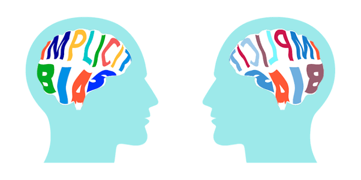

What is implicit bias?
Implicit bias is a term used to describe the unconscious attitudes or stereotypes that affect our understanding, actions, and decisions in an involuntary manner. What we find most interesting is that being aware of bias does not automatically remove it, but awareness can help people slow down and question their first reaction.
What is intersectionality?
Intersectionality is a concept that describes how different aspects of a person's identity, like their race, gender, or sexuality, intersect and overlap, creating unique experiences of discrimination and disadvantage. The concept really pushes us to ask who is being left out when systems or policies are designed.
Our thoughts on the IBT
The Implicit Bias Test is a tool designed to show the implicit biases that people may hold without being aware of them. It was very interesting to take the test. It is a resource that can help people become more aware of their own implicit biases. We thought the implicit bias test was interesting because it showed how quickly we can make associations without consciously thinking about them. We also think the results should be taken with some caution, since they do not necessarily reflect someone’s actual beliefs or actions. Still, the test is useful because it makes you reflect on where certain automatic associations might come from. Here is the link to the Implicit Bias Test: https://implicit.harvard.edu/implicit/takeatest.html
Helpful Resources
Here are some helpful resources for learning more about implicit bias and intersectionality: